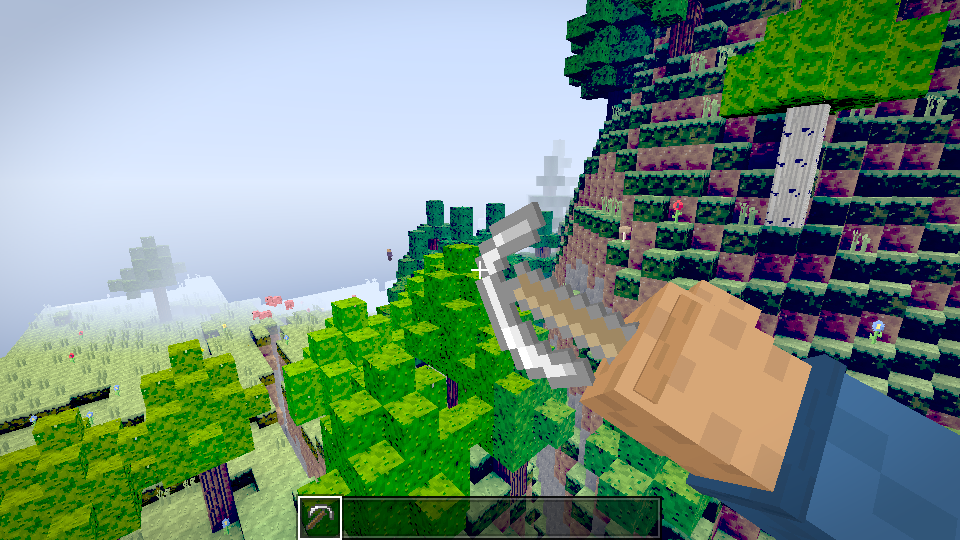
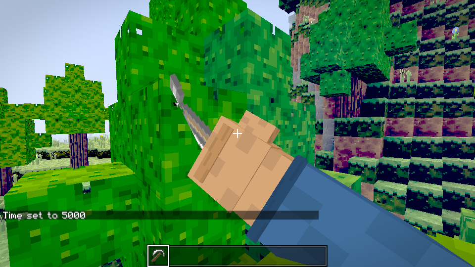
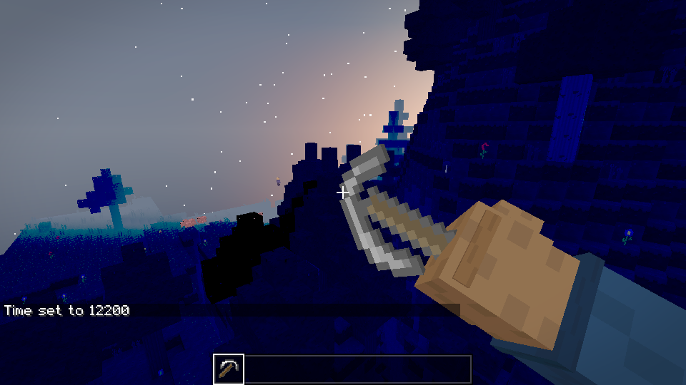
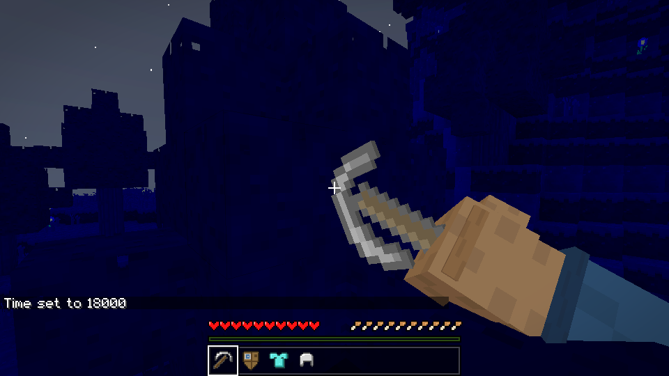
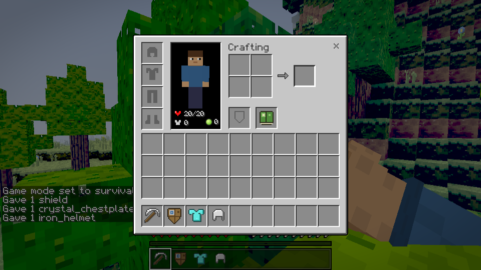
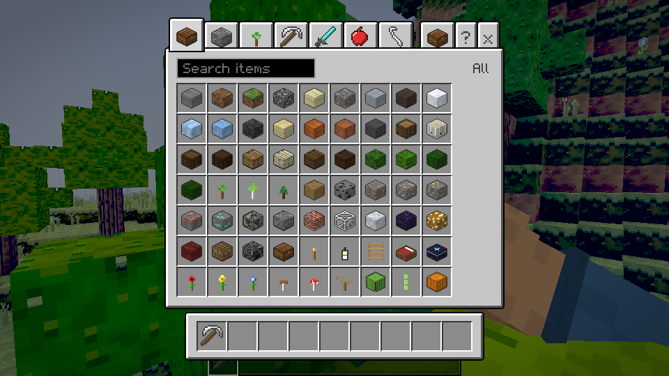
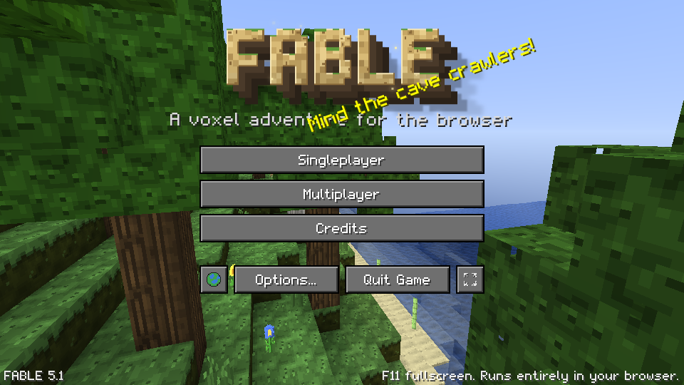

A voxel adventure for the browser.
Dig into an endless procedurally generated world. Mine, craft, build, farm, fight what comes out at night and go looking for the Void Realm — all in one 1.2 MB page that runs on anything with a browser.

What's in the boxEverything is generated in code — textures, sounds, terrain, music and the font. There are no downloaded assets and nothing to update.
An endless world
Simplex-noise continents with rivers, 20 biomes from snowy peaks to mushroom fields, caves, ores, villages, temples, towers, shipwrecks and dungeons. Every seed is different.
Mine, craft, build
90+ block types and 100+ items. Hardness and tool tiers, a 2×2 pocket grid plus the 3×3 crafting table, furnaces, a recipe book that shows you what you can make right now, chests and barrels.
Survive the night
Health, hunger, armour and a shield you can raise with Sneak. Eleven creatures: peaceful herds by day, stalkers, archers, crawlers and flyers by night, guardians underground and the Void Wyrm at the end.
A living sky
Sun, moon and stars, weather with rain and storms, sunsets that colour the fog, day/night lighting that reaches into caves — and an optional shader pack with waving leaves, water reflections, god rays, bloom and colour grading.
Creative & spectator
Flat or normal worlds, cheats and commands, a tabbed creative catalogue with search, flight, and quality presets from Low (integrated GPUs) to Ultra.
Yours to keep
Worlds save automatically in the browser and can be exported to a file and imported anywhere. Keyboard rebinding, GUI scale, colour-blind-safe outlines, reduced flashing and a text-scale option are built in.
ScreenshotsCaptured in-game at default settings. Click to open full size.
{kind=link}

{kind=link}

{kind=link}

{kind=link}

{kind=link}

{kind=link}

ControlsEvery key can be rebound in Options → Controls. Touch controls appear automatically on phones and tablets.
| Move / jump | WASD Space |
| Sprint / sneak (raise shield) | Shift / Ctrl |
| Mine / place or use | Left / right mouse |
| Inventory / drop item | E / Q |
| Hotbar | 1–9 or mouse wheel |
| Chat and commands | T then /help |
| Fly (Creative) | Double-tap Space or F |
| Debug overlay / perspective | F3 / F5 |
| Fullscreen | F11 (or the button on the title screen) |
| Pause | Esc |
RequirementsIf it runs a modern browser, it runs FABLE.
Minimum
Any browser with WebGL 2 (Chrome 80+, Edge, Firefox 75+, Safari 15+). 2 GB RAM. Integrated graphics are fine on the Low / Medium preset.
Recommended
A dedicated GPU for High / Ultra with the shader pack, render distance 12+ and 2× render scale. 60 fps is the target on a mid-range laptop at Medium.
Offline & installable
Open the page once and it keeps working without a connection. On Chrome, Edge and Android choose Install FABLE from the address bar to get a fullscreen app icon; the downloadable copy is a single HTML file.
MultiplayerBring friends. The bundled server is one file and one command.
FABLE ships with an authoritative multiplayer server (block changes, world time, player positions and chat are all validated server-side, with rate limits and reach checks). It needs Node 20 and nothing else:
npm installnpm run server -- --port 8080 --seed 12345
Players open the game, pick Multiplayer and enter your-host:8080. Put it behind any TLS proxy for wss:// when hosting on the public internet.
Original by designNo borrowed assets.
FABLE is an original game in the block-building genre. Its textures, sounds, music, font (Fable Pixel, SIL OFL 1.1), creatures, logo and UI were all created for this project, and every one of them is generated at runtime from code. The game is not affiliated with, endorsed by, or derived from any other voxel game or its publisher.
Engine: TypeScript, three.js, React and Vite, with the terrain mesher running in a Web Worker.
FAQ
Where are my worlds saved?
In your browser's storage on this device. Use Singleplayer → Export to download a world file and Import to load it on another device or browser. Clearing site data deletes local worlds, so export the ones you care about.
Is it really free?
Yes. No account, no ads inside the game, no purchases. The downloadable copy is the same game as the web version.
It runs slowly. What do I change?
Options → Video: pick the Low or Medium preset, lower Render Distance and set Render Scale to 1.0×. Turn the Shader Pack off. Closing other tabs that use the GPU helps too.
Does it work on phones?
Yes, with on-screen controls. Play in landscape and use Install / Add to Home Screen for a fullscreen app. Large worlds are heavier on phones, so start with render distance 4.
Fullscreen doesn't start automatically.
Browsers only allow fullscreen after a click, which is why the Play page asks first. Press F11 at any time, or use the fullscreen button on the title screen or in Options → Video.
Can I mod it or read the code?
The full TypeScript source is in the repository, with a physics test suite, a build that produces a single HTML file, and a documented protocol for the server.